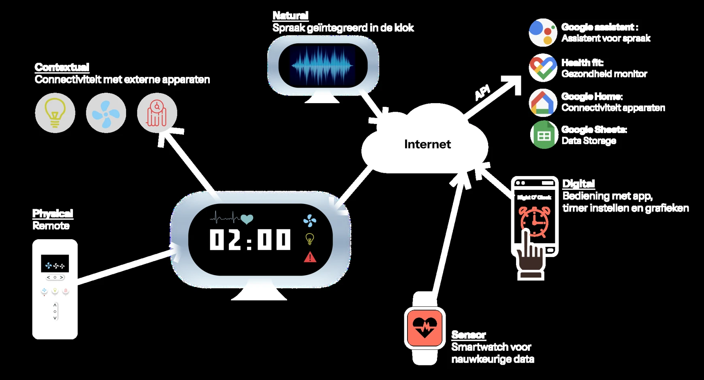
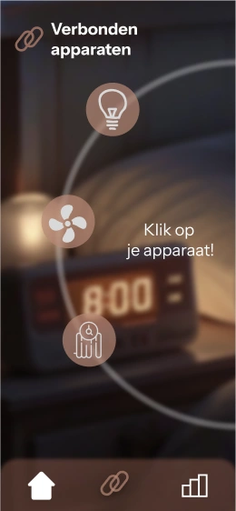
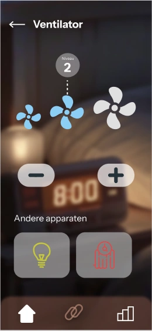
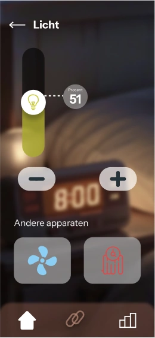
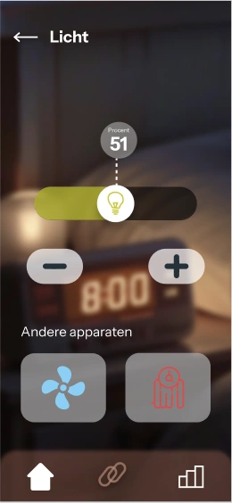
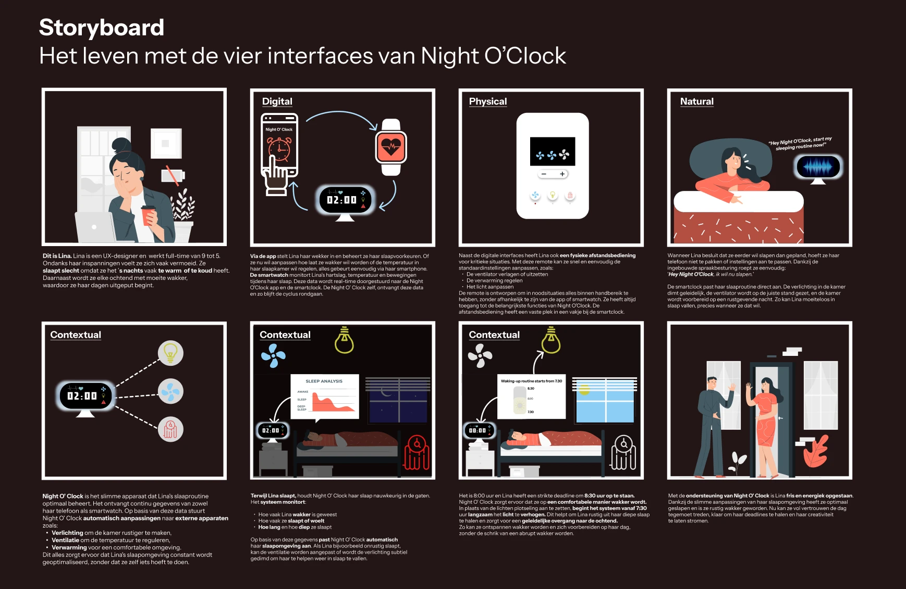

Emerging Technologies minor
Night O’clock
A smart bedside clock concept for winding down at night and waking up to a room that gradually gets brighter.

- Focus
- IoT concept design
- Project
- Concept model, four interfaces and a storyboard
The challenge
I wanted to make it easier to dim the lights, cool the room and set an alarm at bedtime. I used a fictional character, Lina, to show how she might use the clock and its controls from bedtime through to morning.
How the system works
I mapped what Lina could control directly, what the clock could adjust on its own, and how connected devices could work together. The concept links a smartwatch and bedside clock to the room’s lights, fan and thermostat.

Four ways to interact
Lina can set up a routine on her phone, reach for a remote to make a quick change in the dark, or start the routine with a voice command. The concept also shows how the room could adjust automatically, for example by brightening the lights slowly when it’s time to wake up.
Smartphone interface
From Connected Devices, Lina can pick the fan, lights or heating. The fan screen uses plus and minus buttons to change the speed. I explored two layouts for the light control: a vertical slider and a horizontal one.








Original prototype screens in Dutch.
What I made
I drew a system diagram to show how the devices communicate, then storyboarded a night in Lina’s room to put the four ways to interact into context. I developed the concept during my Emerging Technologies minor.
